| Instancia | Número de ciudades | Archivo de coordenadas | Tipo de referencia | |
|---|---|---|---|---|
| 0 | TSP_10 | 10 | resultados/coordenadas_TSP_10.csv | Distancia óptima exacta |
| 19 | TSP_20 | 20 | resultados/coordenadas_TSP_20.csv | Mejor referencia experimental |
| 28 | TSP_50 | 50 | resultados/coordenadas_TSP_50.csv | Mejor referencia experimental |
| 10 | TSP_100 | 100 | resultados/coordenadas_TSP_100.csv | Mejor referencia experimental |
Aplicación de Metaheurísticas y Computación Evolutiva al Problema del Viajero
Comparación experimental de algoritmos para el TSP
Asignatura: Computación Evolutiva
Profesor: Cristian Inzulza
Carrera: Ingeniería en Ciencia de Datos
Institución: Universidad Mayor
1. Introducción
La optimización de procesos y recursos es un desafío central en diversas disciplinas científicas e industriales (Pop et al., 2024). Entre los problemas más estudiados en este ámbito se encuentra el Problema del Viajero (TSP, por sus siglas en inglés), un problema clásico de optimización combinatoria cuyo propósito es encontrar una ruta cerrada que visite un conjunto de ciudades exactamente una vez y vuelva al punto inicial, minimizando la distancia total recorrida.
La dificultad inherente del TSP radica en la complejidad combinatoria de sus posibles soluciones. A medida que el número de ciudades aumenta, la cantidad de permutaciones posibles crece de manera factorial, lo que define el carácter NP-Hard del problema (Metaheurísticas I, s. f.). Debido a esta explosión combinatoria, los métodos exactos se vuelven rápidamente inviables desde el punto de vista computacional, siendo aplicables únicamente a instancias muy pequeñas.
Para superar las limitaciones de los métodos exactos en instancias de mayor tamaño, la ciencia de la computación ha recurrido a estrategias de búsqueda aproximada. En este contexto, las heurísticas, las metaheurísticas y la computación evolutiva se presentan como alternativas robustas (Clase 3: Computación Evolutiva, s. f.). Estos enfoques buscan obtener soluciones de buena calidad en tiempos computacionalmente razonables, especialmente en instancias donde la búsqueda exacta deja de ser práctica (Metaheurísticas I, s. f.).
El presente informe analiza y compara el rendimiento de diversas aproximaciones algorítmicas aplicadas a instancias del TSP de diferente dimensionalidad, abarcando desde métodos exactos y heurísticas constructivas, hasta metaheurísticas de trayectoria y métodos basados en población. El objetivo es identificar las fortalezas y debilidades de cada técnica al enfrentar la explosión combinatoria propia de este problema.
2. Objetivos
Objetivo General
Evaluar y comparar el rendimiento de métodos exactos, heurísticos y metaheurísticos en la resolución del Problema del Viajero (TSP), analizando el balance entre la calidad de la solución y el tiempo de ejecución en instancias de diferente dimensionalidad.
Objetivos Específicos
- Implementar un abanico de algoritmos de optimización que abarque búsquedas exactas, heurísticas constructivas, búsquedas locales, metaheurísticas de trayectoria y métodos basados en población.
- Generar y evaluar el desempeño de los algoritmos sobre instancias experimentales del TSP de distinto tamaño: TSP_10, TSP_20, TSP_50 y TSP_100.
- Analizar la precisión de los algoritmos calculando el error relativo respecto al valor óptimo exacto obtenido mediante fuerza bruta para TSP_10.
- Evaluar la calidad de los resultados en TSP_20, TSP_50 y TSP_100 utilizando el error relativo frente a la mejor referencia experimental encontrada, sin asumir optimalidad global.
- Comparar la calidad de la solución versus el tiempo de ejecución para determinar las estrategias algorítmicas más eficientes según la escala del problema.
3. Marco Teórico del Problema del Viajero (TSP)
El Problema del Viajero (TSP) es un problema fundamental de enrutamiento y optimización combinatoria (Pop et al., 2024). Matemáticamente, puede modelarse utilizando un grafo donde los nodos representan las ciudades y las aristas representan las distancias, por ejemplo, distancias euclidianas en un plano 2D, entre pares de ciudades. El objetivo del problema es descubrir el ciclo hamiltoniano óptimo; es decir, un recorrido cerrado que visite cada nodo exactamente una vez, regrese al origen y minimice la sumatoria de los costos o distancias de las aristas transitadas.
El mayor obstáculo para resolver el TSP es su complejidad combinatoria. Para un problema simétrico con (n) ciudades, el crecimiento factorial implica que el espacio de búsqueda se vuelve inabarcable de forma exhaustiva a medida que (n) aumenta (Metaheurísticas I, s. f.). Debido a este carácter NP-Hard del problema, los métodos exactos solo son viables para instancias de tamaño reducido. Para instancias medianas y grandes, el costo computacional obliga a la adopción de algoritmos aproximados (Metaheurísticas I, s. f.).
Una solución del TSP puede representarse como una permutación de ciudades, donde el orden de la permutación define el recorrido (Eiben & Smith, 2015). Esta representación es especialmente importante para los algoritmos evolutivos, porque los operadores de cruce y mutación deben preservar rutas válidas, es decir, sin ciudades repetidas ni ciudades omitidas.
4. Marco Teórico de Computación Evolutiva y Metaheurísticas
Frente a espacios de búsqueda exponenciales donde los enfoques exactos dejan de ser prácticos, emergen las metaheurísticas y la computación evolutiva. Una metaheurística es un marco algorítmico de búsqueda inteligente que guía y modifica a otras heurísticas subordinadas para explorar el espacio de soluciones de forma eficiente (Metaheurísticas I, s. f.). Por su parte, la computación evolutiva es una técnica de inteligencia artificial inspirada en la selección natural de la biología, como supervivencia del más apto, reproducción y mutación, que utiliza poblaciones de soluciones candidatas que evolucionan iterativamente con el tiempo (Clase 3: Computación Evolutiva, s. f.).
El éxito de cualquier metaheurística o algoritmo evolutivo depende críticamente de cómo gestiona el balance dinámico entre dos fuerzas fundamentales de búsqueda: la exploración y la explotación (Metaheurísticas I, s. f.).
- Exploración (Diversificación): consiste en navegar hacia regiones del espacio de búsqueda que son completamente nuevas o desconocidas. Su propósito es evitar que el algoritmo quede atrapado en valles subóptimos conocidos como óptimos locales (Metaheurísticas II, s. f.).
- Explotación (Intensificación): consiste en refinar y mejorar de forma intensiva las soluciones actuales que ya han demostrado ser prometedoras, buscando exhaustivamente en su vecindario inmediato para aislar la mejor variante posible.
En la práctica algorítmica, resulta imperativo lograr un buen equilibrio entre calidad de solución y tiempo de ejecución. Dado que en entornos reales no se suele disponer del tiempo necesario para alcanzar una solución óptima demostrable mediante métodos exactos, el objetivo se traslada a la eficiencia: obtener soluciones de buena calidad en tiempos computacionalmente razonables, especialmente en instancias donde la búsqueda exacta deja de ser práctica (Metaheurísticas I, s. f.).
Para este estudio, los algoritmos implementados se clasifican de la siguiente manera:
- Fuerza bruta: método exacto que evalúa exhaustivamente todas las rutas posibles. Garantiza el óptimo para instancias pequeñas, pero su costo computacional crece rápidamente y se vuelve inviable para instancias grandes (Metaheurísticas I, s. f.).
- Greedy (vecino más cercano): heurística constructiva que forma la ruta paso a paso eligiendo la opción local más favorable. Es sumamente rápida, pero miope frente al óptimo global, quedando atrapada fácilmente en óptimos locales (Metaheurísticas I, s. f.).
- 2-opt: búsqueda local basada en mejora iterativa que parte de una solución inicial y la refina moviéndose sistemáticamente a mejores vecinos.
- Or-opt / 3-opt simplificado: búsqueda local basada en la reubicación de segmentos de la ruta. A diferencia de 2-opt, que invierte partes de la ruta eliminando cruces entre dos aristas, esta variante permite mover bloques o segmentos, ampliando el vecindario de soluciones exploradas (Wang & Han, 2021).
- ILS (Iterated Local Search): metaheurística de búsqueda local iterada que combina la intensificación con pasos de perturbación para escapar de los óptimos locales y explorar nuevos valles (Metaheurísticas I, s. f.).
- Tabu Search: metaheurística con memoria que utiliza listas tabú para guardar movimientos recientes y prohibirlos temporalmente. Esto obliga al algoritmo a aceptar el mejor vecino disponible, incluso si empeora la solución, impidiendo así ciclos infinitos (Metaheurísticas I, s. f.).
- Simulated Annealing: metaheurística probabilística inspirada en el enfriamiento de metales, que permite aceptar ocasionalmente soluciones peores guiándose por una probabilidad térmica, lo cual facilita escapar de trampas locales durante la fase de exploración (Metaheurísticas I, s. f.).
- Algoritmo Genético: método de computación evolutiva basado en población que mantiene múltiples soluciones simultáneas, combinándolas y alterándolas para transferir características exitosas (Clase 3: Computación Evolutiva, s. f.). Dado que el problema exige una estructura de ciclo hamiltoniano, se deben emplear operadores genéticos especializados que preserven la estructura de permutación de la ruta sin generar ciudades repetidas ni omitidas (Eiben & Smith, 2015).
- GRASP (Greedy Randomized Adaptive Search Procedure): metaheurística constructiva aleatorizada que fusiona la velocidad de un enfoque greedy con decisiones probabilísticas controladas mediante una lista restringida de candidatos, refinando posteriormente cada resultado con búsqueda local (Metaheurísticas I, s. f.).
- VNS (Variable Neighborhood Search): metaheurística basada en el cambio sistemático de vecindarios que altera de forma dinámica la escala y el tipo de los movimientos de búsqueda para escapar eficientemente al detectar un estancamiento (Metaheurísticas II, s. f.).
5. Diseño Experimental
Para evaluar de manera rigurosa y objetiva el desempeño de los métodos exactos, heurísticos y metaheurísticos descritos, se estructuró un diseño experimental basado en la resolución de instancias sintéticas del Problema del Viajero (TSP). El experimento se centró en analizar el comportamiento de los algoritmos al enfrentar el crecimiento combinatorio característico de este problema (Metaheurísticas I, s. f.).
5.1 Generación de Instancias
El estudio consideró la generación de cuatro instancias experimentales de distinto tamaño, denominadas de acuerdo a su cantidad de nodos: TSP_10, TSP_20, TSP_50 y TSP_100. En todas ellas, las ciudades fueron modeladas como coordenadas espaciales distribuidas aleatoriamente en un plano 2D, controlando la aleatoriedad del experimento cuando correspondió, con el fin de favorecer la reproducibilidad. Las distancias entre cada par de ciudades se calcularon utilizando la métrica de distancia euclidiana, conformando así una matriz de distancias simétrica. Toda ruta válida generada en este experimento corresponde a una permutación que visita cada ciudad exactamente una vez y retorna al punto de origen.
El objetivo de utilizar instancias de dimensionalidad creciente es observar de manera empírica cómo cambia el rendimiento de los algoritmos, tanto en términos de tiempo de ejecución como en la calidad de la solución, a medida que aumenta la complejidad combinatoria del problema.
| Instancia | Número de ciudades | Tipo de coordenadas | Métrica de distancia | Referencia de comparación |
|---|---|---|---|---|
| TSP_10 | 10 | Coordenadas 2D | Distancia euclidiana | Óptimo exacto por fuerza bruta |
| TSP_20 | 20 | Coordenadas 2D | Distancia euclidiana | Mejor solución experimental encontrada |
| TSP_50 | 50 | Coordenadas 2D | Distancia euclidiana | Mejor solución experimental encontrada |
| TSP_100 | 100 | Coordenadas 2D | Distancia euclidiana | Mejor solución experimental encontrada |
La tabla anterior resume el diseño de las instancias experimentales. Además, los archivos reales de coordenadas y referencias consolidadas se leen desde la carpeta resultados/, como se muestra a continuación.
Los gráficos de dispersión siguientes muestran la distribución espacial inicial de las ciudades para las instancias TSP_10, TSP_20, TSP_50 y TSP_100.
Distribución espacial inicial de TSP_10
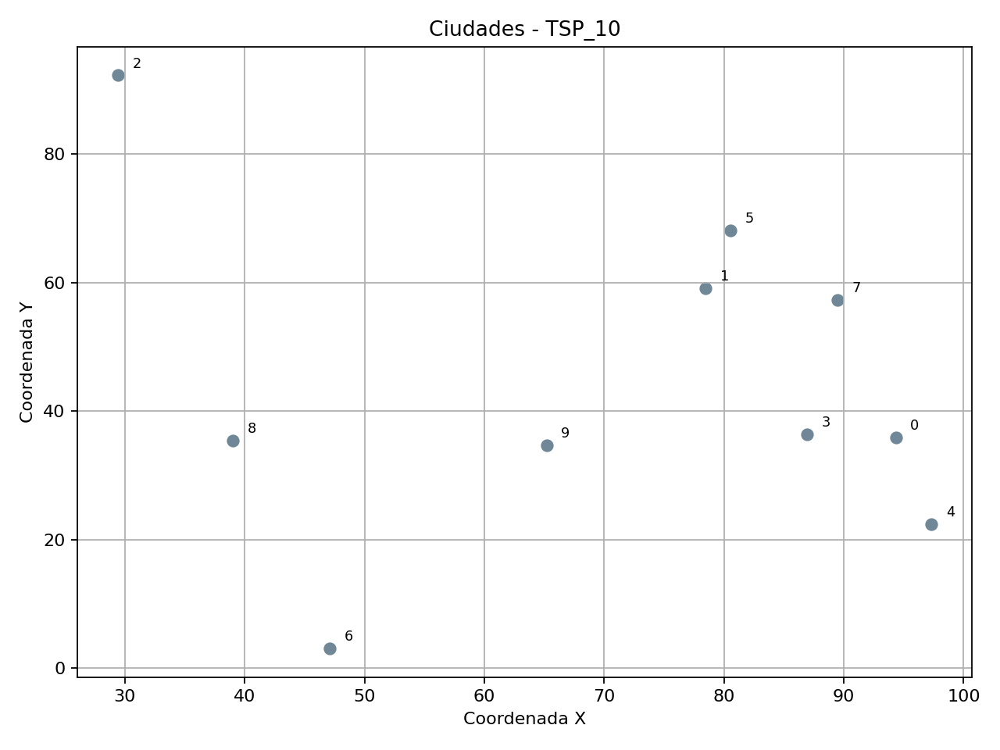
Distribución espacial inicial de TSP_20
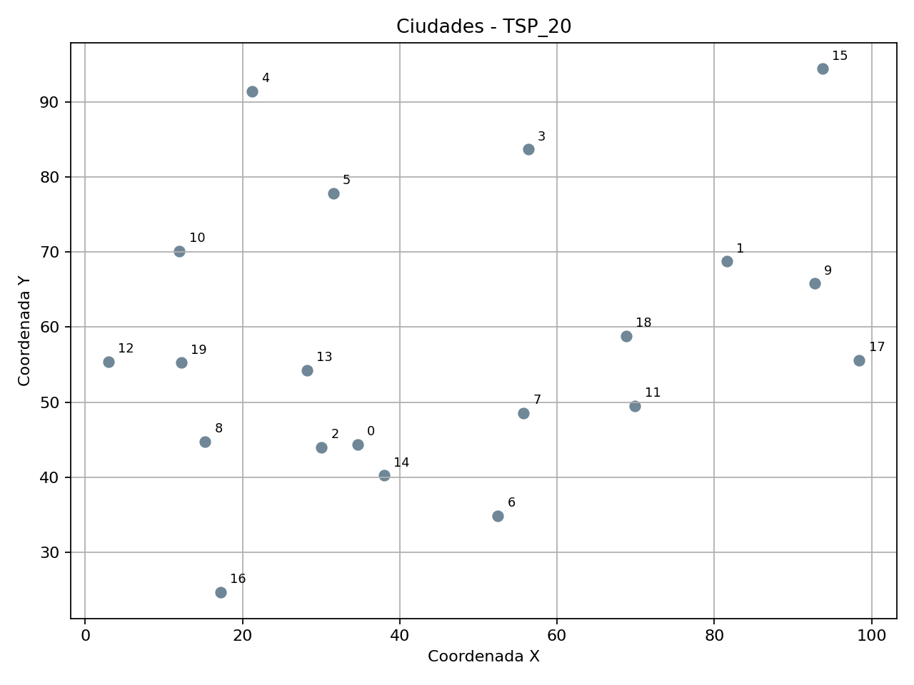
Distribución espacial inicial de TSP_50
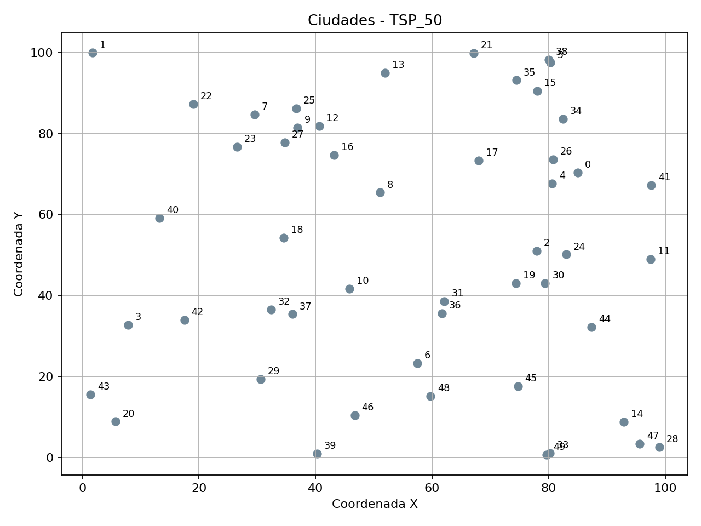
Distribución espacial inicial de TSP_100
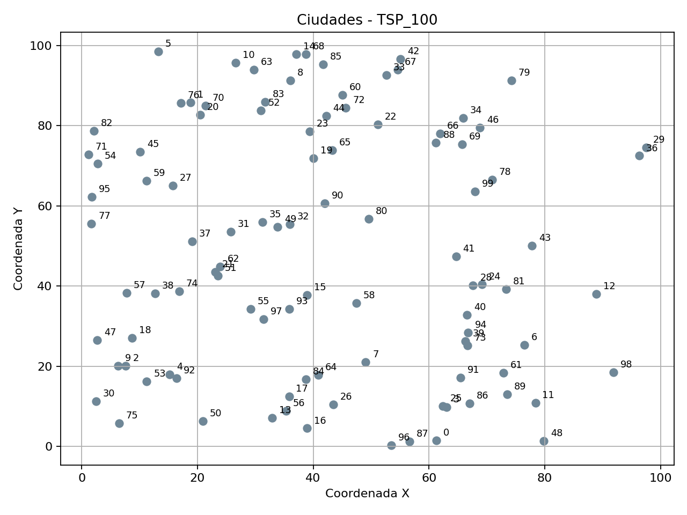
5.2 Algoritmos Evaluados
Todos los algoritmos considerados en el marco teórico fueron sometidos a las mismas condiciones experimentales. El conjunto de técnicas evaluadas incluye:
- Método exacto: Fuerza bruta.
- Heurística constructiva: Greedy (vecino más cercano).
- Búsquedas locales: 2-opt y Or-opt / 3-opt simplificado.
- Metaheurísticas: ILS, Tabu Search, Simulated Annealing, Algoritmo Genético, GRASP y VNS.
Cabe destacar que el método de fuerza bruta se aplicó de manera exclusiva a la instancia TSP_10, debido a que el crecimiento factorial de las permutaciones vuelve computacionalmente inviable su ejecución para 20 o más ciudades (Eiben & Smith, 2015).
La siguiente tabla corresponde a los algoritmos efectivamente detectados en los resultados consolidados del proyecto.
5.3 Métricas de Evaluación y Referencias de Comparación
Para medir y comparar el rendimiento de los distintos algoritmos, el experimento se basó fundamentalmente en dos dimensiones críticas: la calidad de la ruta obtenida y el costo computacional invertido.
La calidad de la solución se evaluó calculando la distancia total de la ruta generada y determinando su error relativo. La fórmula utilizada para el cálculo porcentual del error es la siguiente:
\[ \text{Error relativo (\%)} = \frac{ \text{Distancia obtenida} - \text{Distancia de referencia} }{ \text{Distancia de referencia} } \times 100 \]
La interpretación del error relativo en este diseño experimental requiere una consideración metodológica fundamental respecto a la distancia de referencia:
- En la instancia TSP_10: dado que es posible evaluar exhaustivamente todas las rutas, la distancia de referencia corresponde al valor óptimo exacto obtenido mediante fuerza bruta. Por lo tanto, el error relativo aquí mide la diferencia porcentual entre la distancia obtenida por cada algoritmo y el valor óptimo exacto.
- En las instancias TSP_20, TSP_50 y TSP_100: dado que no se asume optimalidad global porque la búsqueda exacta es impracticable, la distancia de referencia corresponde a la mejor solución experimental encontrada a lo largo de todas las pruebas realizadas en el proyecto. En este caso, el error relativo mide qué tan competitiva es una solución comparada con el mejor valor de referencia obtenido empíricamente.
Como métrica de costo computacional, se registró el tiempo de ejecución de cada algoritmo. En la práctica de la computación evolutiva, la evaluación del desempeño no se centra únicamente en encontrar la ruta más corta, sino en identificar las técnicas que ofrezcan el mejor compromiso entre los recursos invertidos y la solución generada (Eiben & Smith, 2015).
En consecuencia, los resultados derivados de este diseño experimental deben analizarse considerando simultáneamente la calidad de la solución, la validez de la ruta, el error relativo alcanzado frente a la referencia y el tiempo de ejecución requerido para su obtención.
| Métrica | Descripción | Método de obtención | Interpretación |
|---|---|---|---|
| Distancia total | Longitud completa de la ruta obtenida | Suma de distancias entre ciudades consecutivas y retorno al origen | Menor distancia implica mejor solución |
| Error relativo (%) | Diferencia porcentual respecto a la referencia | Fórmula de error relativo | Permite comparar algoritmos dentro de una misma instancia |
| Tiempo de ejecución | Tiempo requerido por cada algoritmo | Medición computacional durante la ejecución | Representa el costo computacional |
| Validez de ruta | Verificación de que no existan ciudades repetidas u omitidas | Validación de permutación | Asegura que la solución sea factible para el TSP |
5.4 Validación de rutas
La validez de las rutas se revisa con criterios explícitos: inicio y término en la misma ciudad, visita de todas las ciudades, ausencia de repeticiones intermedias, largo (n+1) y ciudades dentro del rango correcto.
Esta validación es importante porque una ruta con baja distancia no sería aceptable si incumple las restricciones básicas del TSP.
6. Implementación Computacional
Esta sección detalla los aspectos técnicos y las decisiones de diseño adoptadas para la programación de los algoritmos y el manejo de los datos durante los experimentos. La correcta representación computacional del problema es fundamental para garantizar la eficiencia de las búsquedas y la validez de los resultados obtenidos (Eiben & Smith, 2015).
6.1 Representación de Soluciones y Estructuras de Datos
Para modelar computacionalmente el Problema del Viajero (TSP), cada solución, o ruta, se representó de forma natural como una permutación de números enteros, donde cada número identifica unívocamente a una ciudad (Eiben & Smith, 2015). Esta estructura de datos garantiza que el recorrido cumpla con la restricción principal del ciclo hamiltoniano: visitar todas las ciudades de la instancia exactamente una vez. Para cerrar el ciclo, la evaluación de la función objetivo añade automáticamente la distancia de retorno desde la última ciudad de la permutación hacia la ciudad inicial.
Como mecanismo de control de calidad, se implementó una rutina de validación computacional al finalizar la ejecución de cada algoritmo. Este proceso verificó matemáticamente que ninguna ruta generada contuviera ciudades repetidas ni omitiera nodos del conjunto original, asegurando así la factibilidad de todas las soluciones reportadas.
Para optimizar el costo de evaluación computacional, se precalculó una matriz de distancias euclidianas a partir de las coordenadas 2D de las ciudades. Esta matriz, al ser simétrica, permite consultar en tiempo constante, (O(1)), la distancia entre cualquier par de ciudades, evitando recalcular la fórmula euclidiana repetidas veces durante el proceso iterativo de las metaheurísticas.
Finalmente, la implementación se estandarizó para que la función principal de cada algoritmo retornara una estructura de datos uniforme que incluye tres componentes esenciales para el análisis:
- Ruta obtenida: el vector ordenado que representa la mejor permutación encontrada.
- Distancia total: el costo o longitud total de dicha ruta.
- Tiempo de ejecución: el tiempo en segundos que el algoritmo tardó en generar la solución, utilizado como métrica directa del costo computacional.
6.2 Descripción Computacional de los Algoritmos
Cada uno de los métodos evaluados fue programado siguiendo su mecánica operativa característica. A continuación, se describe brevemente el rol computacional de cada algoritmo dentro del proyecto:
- Fuerza bruta: implementado como un procedimiento exhaustivo que evalúa todas las rutas posibles para la instancia pequeña. Se utilizó exclusivamente en la instancia
TSP_10para encontrar el valor óptimo exacto y establecer una referencia exacta para la instancia pequeña (Metaheurísticas I, s. f.). - Greedy (vecino más cercano): programado como un proceso iterativo constructivo. Partiendo de una ciudad inicial, busca en la matriz de distancias la ciudad no visitada con el valor más bajo y la añade a la ruta, repitiendo el proceso hasta completar la permutación (Metaheurísticas I, s. f.).
- 2-opt: operador de búsqueda local que evalúa pares de aristas dentro de la ruta y, cuando detecta una mejora, invierte el segmento intermedio para reducir la distancia total (Metaheurísticas II, s. f.).
- Or-opt / 3-opt simplificado: algoritmo de búsqueda local que extrae sub-bloques o segmentos cortos contiguos de la permutación actual y evalúa el impacto en la distancia al reubicarlos en distintas posiciones de la ruta (Metaheurísticas II, s. f.).
- ILS (Iterated Local Search): estructurado mediante un bucle principal que alterna entre aplicar una búsqueda local hasta alcanzar una solución localmente mejorada y aplicar una función de perturbación computacional que modifica la permutación para reiniciar la búsqueda (Metaheurísticas I, s. f.).
- Tabu Search: búsqueda local dotada de una estructura de memoria tipo lista tabú que registra y penaliza movimientos recientes. Computacionalmente, esto obliga a la búsqueda a seleccionar el mejor vecino factible no tabú, permitiendo al algoritmo salir de ciclos repetitivos (Metaheurísticas I, s. f.).
- Simulated Annealing: programado con un bucle de enfriamiento. Si el vecino generado aleatoriamente es mejor, la permutación se actualiza. Si es peor, existe una probabilidad computacional, basada en la función exponencial decreciente de la temperatura y la diferencia de distancia, de aceptarlo, evitando el estancamiento prematuro (Metaheurísticas I, s. f.).
- Algoritmo Genético: modelo poblacional iterativo. Inicializa un conjunto de permutaciones y utiliza operadores evolutivos que preservan la estructura del TSP. Implementa un mecanismo de selección, cruce, mutación y reemplazo definido en el código, procurando preservar rutas válidas sin ciudades repetidas ni omitidas (Clase 3: Computación Evolutiva, s. f.; Eiben & Smith, 2015).
- GRASP (Greedy Randomized Adaptive Search Procedure): sistema de dos fases. Primero, construye de forma iterativa y pseudoaleatoria soluciones iniciales utilizando una Lista Restringida de Candidatos (RCL) calculada dinámicamente; luego, pasa esa estructura a un procedimiento de búsqueda local para su refinamiento intensivo (Metaheurísticas II, s. f.).
- VNS (Variable Neighborhood Search): estructura modular que intercambia en tiempo de ejecución los operadores generadores de vecindarios, escalando el tipo de alteración sobre la ruta para favorecer el escape sistemático cuando el progreso computacional se estanca (Metaheurísticas II, s. f.).
6.3 Parámetros de Control de los Algoritmos
El comportamiento de los métodos estocásticos, las metaheurísticas y los algoritmos evolutivos depende fuertemente de la configuración de sus hiperparámetros (Eiben & Smith, 2015). Con el fin de asegurar la reproducibilidad de este estudio y habilitar un análisis justo sobre el balance entre calidad y tiempo, la siguiente tabla resume los hiperparámetros considerados para los algoritmos evaluados.
| Algoritmo | Parámetro principal | Valor utilizado |
|---|---|---|
| Tabu Search | Tamaño de la lista tabú | 10 o 14, según instancia |
| Tabu Search | Número máximo de iteraciones | 60, 80 o 110, según instancia |
| Simulated Annealing | Temperatura inicial (\(T_0\)) | 140.0 o 190.0, según instancia |
| Simulated Annealing | Tasa de enfriamiento (\(\alpha\)) | 0.9965 |
| Simulated Annealing | Criterio de parada (\(T_{min}\)) | 0.0001 |
| ILS | Nivel de perturbación | dato a verificar |
| ILS | Criterio de reinicio / iteraciones | 16, 24 o 40, según instancia |
| Algoritmo Genético | Tamaño de la población | 42 o 50, según instancia |
| Algoritmo Genético | Probabilidad de cruce (\(p_c\)) | dato a verificar |
| Algoritmo Genético | Probabilidad de mutación (\(p_m\)) | 0.18 |
| Algoritmo Genético | Número de generaciones | 45, 60 o 75, según instancia |
| GRASP | Parámetro de restricción (\(\alpha\) en RCL) | 0.35 |
| GRASP | Número de construcciones / iteraciones | 9, 14 o 24, según instancia |
| VNS | Estructuras de vecindarios (\(k_{max}\)) | swap, inversión, inserción y Or-opt |
| VNS | Iteraciones máximas sin mejora | dato a verificar |
Los valores marcados como “dato a verificar” no aparecen explícitamente como hiperparámetro consolidado en tablas/parametros_algoritmos.csv. Por esta razón, no se infieren ni se reemplazan por valores no confirmados.
Como respaldo, la tabla completa de parámetros registrados por instancia, algoritmo y repetición se incluye en los anexos.
7. Resultados
En esta sección los resultados se presentan como una historia por instancia. La idea es observar primero la forma espacial del problema, luego revisar la tabla comparativa de métricas, interpretar distancia y error relativo, analizar el tiempo de ejecución, observar la ruta ganadora mediante GIF y cerrar con la relación entre calidad y costo computacional.
7.1 Instancia TSP_10
7.1.1 Tabla comparativa de métricas para TSP_10
La tabla siguiente resume el desempeño de cada algoritmo en esta instancia. Se comparan la distancia obtenida, la referencia usada, el error relativo, el tiempo promedio y la validez de la ruta.
| Algoritmo | Tipo | Mejor distancia | Distancia de referencia | Tipo de referencia | Error relativo % | Tiempo promedio | Ruta válida | |
|---|---|---|---|---|---|---|---|---|
| 6 | Or-opt / 3-opt simplificado | Mejora local | 279.2895 | 279.2895 | Distancia óptima exacta | 0.0000 | 0.0015 | True |
| 7 | Simulated Annealing | Trayectoria probabilística | 279.2895 | 279.2895 | Distancia óptima exacta | 0.0000 | 0.0099 | True |
| 5 | ILS | Trayectoria | 279.2895 | 279.2895 | Distancia óptima exacta | 0.0000 | 0.0114 | True |
| 3 | GRASP | Constructivo + mejora | 279.2895 | 279.2895 | Distancia óptima exacta | 0.0000 | 0.0136 | True |
| 8 | Tabu Search | Trayectoria con memoria | 279.2895 | 279.2895 | Distancia óptima exacta | 0.0000 | 0.0402 | True |
| 0 | Algoritmo Genético | Poblacional evolutivo | 279.2895 | 279.2895 | Distancia óptima exacta | 0.0000 | 0.0936 | True |
| 9 | VNS | Búsqueda por vecindarios variables | 279.2895 | 279.2895 | Distancia óptima exacta | 0.0000 | 0.2248 | True |
| 2 | Fuerza bruta exacta | Exacto | 279.2895 | 279.2895 | Distancia óptima exacta | 0.0000 | 1.5926 | True |
| 1 | Búsqueda local 2-opt | Mejora local | 305.8516 | 279.2895 | Distancia óptima exacta | 9.5106 | 0.0004 | True |
| 4 | Greedy vecino más cercano | Constructivo | 361.5642 | 279.2895 | Distancia óptima exacta | 29.4586 | 0.0000 | True |
En TSP_10, la mejor distancia registrada corresponde a Or-opt / 3-opt simplificado, con una distancia de 279.2895 y un error relativo de 0.0000%. La referencia utilizada para esta instancia es Distancia óptima exacta. En términos de rapidez, el menor tiempo promedio lo obtuvo Greedy vecino más cercano con 0.000031 segundos. El mayor error relativo se observa en Greedy vecino más cercano, lo que permite distinguir entre una solución rápida y una solución de mejor calidad.
7.1.2 Distancia y error relativo en TSP_10
Después de revisar la tabla, los gráficos de distancia y error relativo permiten observar visualmente qué algoritmos se acercan más a la referencia de comparación y cuáles quedan más alejados.
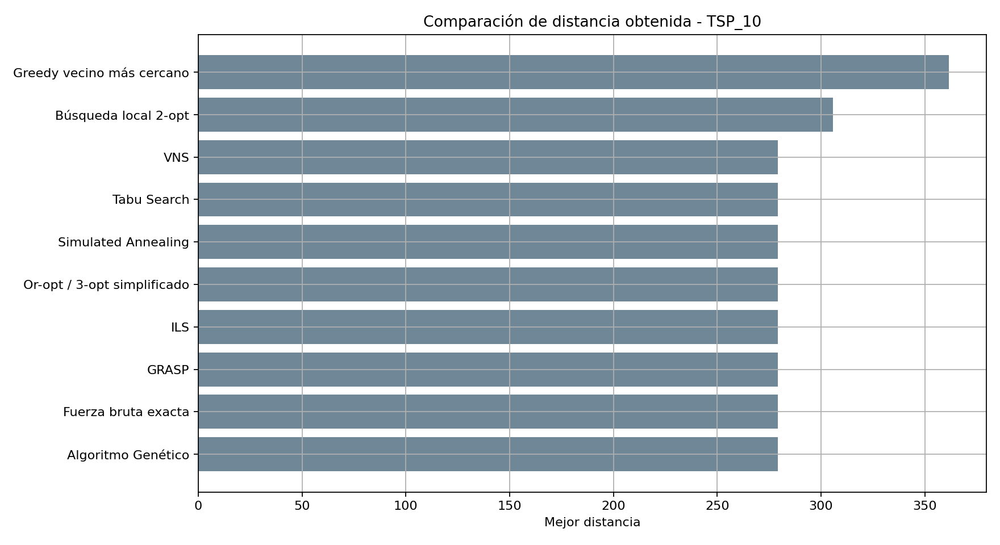
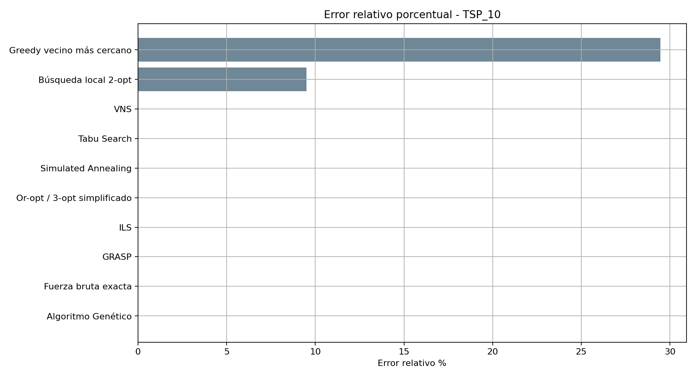
Estos gráficos permiten observar la calidad de las soluciones en TSP_10. Los algoritmos con menor error relativo se ubican más cerca de la referencia; en esta instancia, destacan Algoritmo Genético, Fuerza bruta exacta, GRASP, ILS. Las barras de error muestran con claridad qué métodos quedan más alejados de la mejor distancia disponible para la comparación.
7.1.3 Tiempo de ejecución en TSP_10
El siguiente paso es revisar el costo computacional. Este gráfico muestra cuánto tarda cada algoritmo en promedio y ayuda a distinguir métodos rápidos de métodos más costosos.
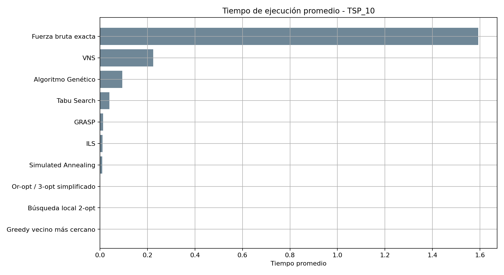
El gráfico de tiempo de TSP_10 muestra el costo computacional relativo de cada método. El algoritmo más rápido fue Greedy vecino más cercano, mientras que el mayor tiempo promedio correspondió a Fuerza bruta exacta. Esta diferencia es relevante porque una mejor distancia no siempre se obtiene con el menor costo computacional.
7.1.4 Ruta ganadora animada de TSP_10
Una vez identificada la mejor solución, el GIF permite observar el recorrido ciudad por ciudad. Esta visualización transforma la ruta ganadora en una secuencia interpretable y más útil para explicar el resultado.
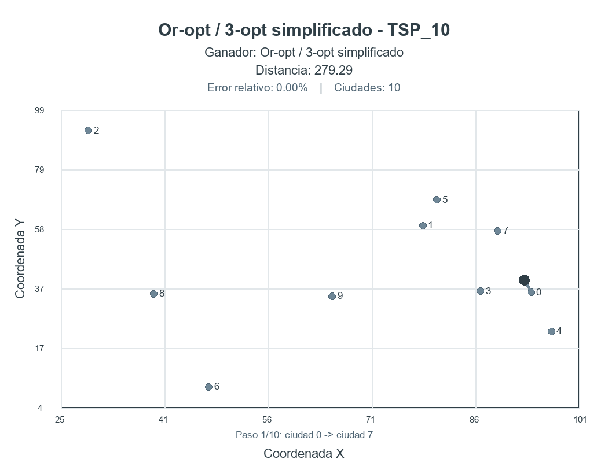
El GIF muestra paso a paso la ruta ganadora de TSP_10. En esta instancia, el algoritmo ganador fue Or-opt / 3-opt simplificado, con distancia 279.2895. Esta visualización ayuda a explicar la solución como recorrido secuencial de ciudad en ciudad, en lugar de verla solo como una línea estática.
7.2 Instancia TSP_20
7.2.1 Tabla comparativa de métricas para TSP_20
La tabla siguiente resume el desempeño de cada algoritmo en esta instancia. Se comparan la distancia obtenida, la referencia usada, el error relativo, el tiempo promedio y la validez de la ruta.
| Algoritmo | Tipo | Mejor distancia | Distancia de referencia | Tipo de referencia | Error relativo % | Tiempo promedio | Ruta válida | |
|---|---|---|---|---|---|---|---|---|
| 24 | Or-opt / 3-opt simplificado | Mejora local | 344.0890 | 344.089 | Mejor referencia experimental | 0.0000 | 0.0121 | True |
| 26 | Tabu Search | Trayectoria con memoria | 344.0890 | 344.089 | Mejor referencia experimental | 0.0000 | 0.0576 | True |
| 19 | Algoritmo Genético | Poblacional evolutivo | 344.0890 | 344.089 | Mejor referencia experimental | 0.0000 | 0.0971 | True |
| 23 | ILS | Trayectoria | 344.0890 | 344.089 | Mejor referencia experimental | 0.0000 | 0.1104 | True |
| 27 | VNS | Búsqueda por vecindarios variables | 344.0890 | 344.089 | Mejor referencia experimental | 0.0000 | 1.7815 | True |
| 20 | Búsqueda local 2-opt | Mejora local | 347.7039 | 344.089 | Mejor referencia experimental | 1.0506 | 0.0025 | True |
| 25 | Simulated Annealing | Trayectoria probabilística | 353.7610 | 344.089 | Mejor referencia experimental | 2.8109 | 0.0150 | True |
| 22 | Greedy vecino más cercano | Constructivo | 364.1710 | 344.089 | Mejor referencia experimental | 5.8363 | 0.0001 | True |
| 21 | GRASP | Constructivo + mejora | 367.9583 | 344.089 | Mejor referencia experimental | 6.9370 | 0.0883 | True |
En TSP_20, la mejor distancia registrada corresponde a Or-opt / 3-opt simplificado, con una distancia de 344.0890 y un error relativo de 0.0000%. La referencia utilizada para esta instancia es Mejor referencia experimental. En términos de rapidez, el menor tiempo promedio lo obtuvo Greedy vecino más cercano con 0.000078 segundos. El mayor error relativo se observa en GRASP, lo que permite distinguir entre una solución rápida y una solución de mejor calidad.
7.2.2 Distancia y error relativo en TSP_20
Después de revisar la tabla, los gráficos de distancia y error relativo permiten observar visualmente qué algoritmos se acercan más a la referencia de comparación y cuáles quedan más alejados.
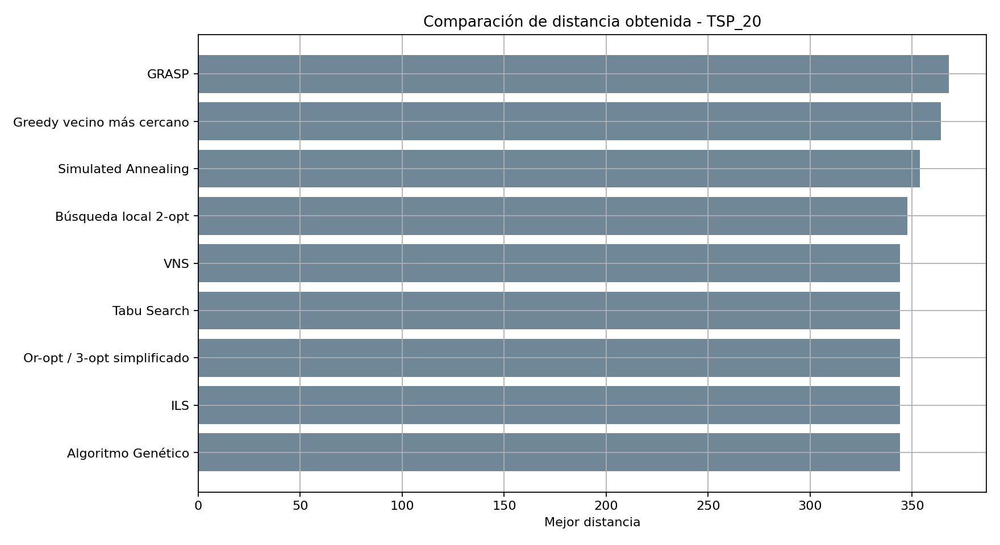
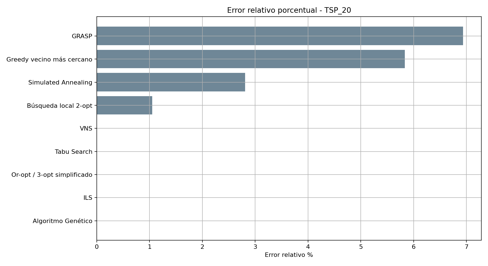
Estos gráficos permiten observar la calidad de las soluciones en TSP_20. Los algoritmos con menor error relativo se ubican más cerca de la referencia; en esta instancia, destacan Algoritmo Genético, ILS, Or-opt / 3-opt simplificado, Tabu Search. Las barras de error muestran con claridad qué métodos quedan más alejados de la mejor distancia disponible para la comparación.
7.2.3 Tiempo de ejecución en TSP_20
El siguiente paso es revisar el costo computacional. Este gráfico muestra cuánto tarda cada algoritmo en promedio y ayuda a distinguir métodos rápidos de métodos más costosos.
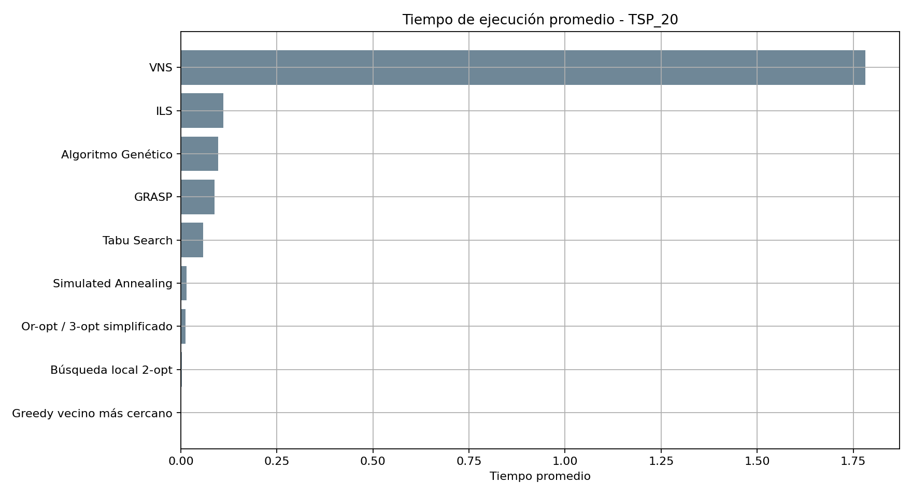
El gráfico de tiempo de TSP_20 muestra el costo computacional relativo de cada método. El algoritmo más rápido fue Greedy vecino más cercano, mientras que el mayor tiempo promedio correspondió a VNS. Esta diferencia es relevante porque una mejor distancia no siempre se obtiene con el menor costo computacional.
7.2.4 Ruta ganadora animada de TSP_20
Una vez identificada la mejor solución, el GIF permite observar el recorrido ciudad por ciudad. Esta visualización transforma la ruta ganadora en una secuencia interpretable y más útil para explicar el resultado.
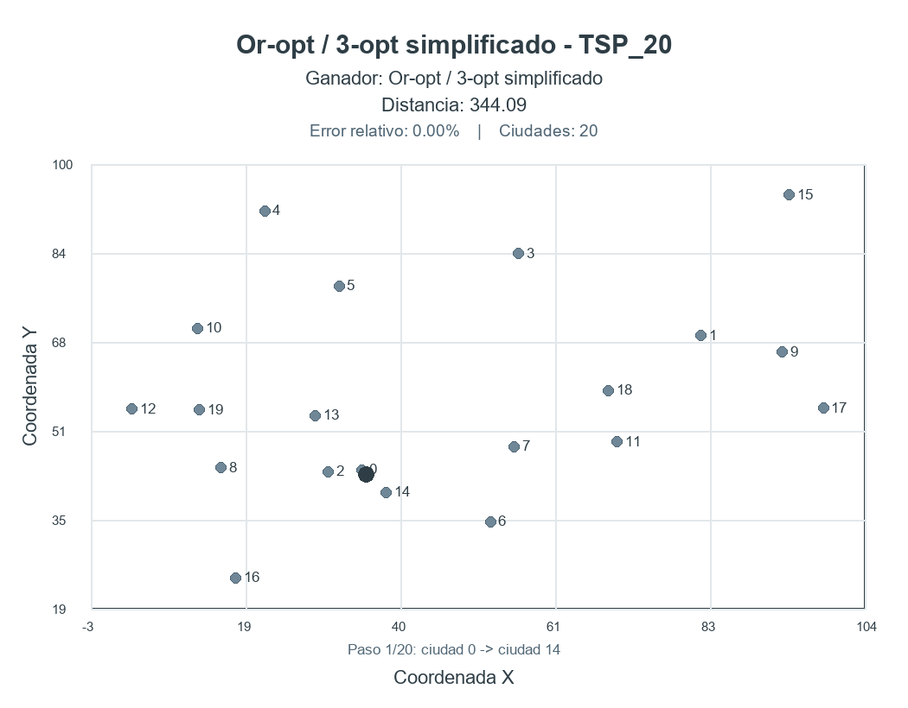
El GIF muestra paso a paso la ruta ganadora de TSP_20. En esta instancia, el algoritmo ganador fue Or-opt / 3-opt simplificado, con distancia 344.0890. Esta visualización ayuda a explicar la solución como recorrido secuencial de ciudad en ciudad, en lugar de verla solo como una línea estática.
7.3 Instancia TSP_50
7.3.1 Tabla comparativa de métricas para TSP_50
La tabla siguiente resume el desempeño de cada algoritmo en esta instancia. Se comparan la distancia obtenida, la referencia usada, el error relativo, el tiempo promedio y la validez de la ruta.
| Algoritmo | Tipo | Mejor distancia | Distancia de referencia | Tipo de referencia | Error relativo % | Tiempo promedio | Ruta válida | |
|---|---|---|---|---|---|---|---|---|
| 36 | VNS | Búsqueda por vecindarios variables | 630.5203 | 630.5203 | Mejor referencia experimental | 0.0000 | 12.8827 | True |
| 32 | ILS | Trayectoria | 639.2708 | 630.5203 | Mejor referencia experimental | 1.3878 | 1.5070 | True |
| 33 | Or-opt / 3-opt simplificado | Mejora local | 661.7210 | 630.5203 | Mejor referencia experimental | 4.9484 | 0.3647 | True |
| 28 | Algoritmo Genético | Poblacional evolutivo | 668.8435 | 630.5203 | Mejor referencia experimental | 6.0780 | 0.2174 | True |
| 35 | Tabu Search | Trayectoria con memoria | 680.4021 | 630.5203 | Mejor referencia experimental | 7.9112 | 0.4164 | True |
| 29 | Búsqueda local 2-opt | Mejora local | 704.6312 | 630.5203 | Mejor referencia experimental | 11.7539 | 0.2102 | True |
| 31 | Greedy vecino más cercano | Constructivo | 799.7697 | 630.5203 | Mejor referencia experimental | 26.8428 | 0.0003 | True |
| 34 | Simulated Annealing | Trayectoria probabilística | 799.7697 | 630.5203 | Mejor referencia experimental | 26.8428 | 0.0330 | True |
| 30 | GRASP | Constructivo + mejora | 1087.1294 | 630.5203 | Mejor referencia experimental | 72.4178 | 0.1587 | True |
En TSP_50, la mejor distancia registrada corresponde a VNS, con una distancia de 630.5203 y un error relativo de 0.0000%. La referencia utilizada para esta instancia es Mejor referencia experimental. En términos de rapidez, el menor tiempo promedio lo obtuvo Greedy vecino más cercano con 0.000298 segundos. El mayor error relativo se observa en GRASP, lo que permite distinguir entre una solución rápida y una solución de mejor calidad.
7.3.2 Distancia y error relativo en TSP_50
Después de revisar la tabla, los gráficos de distancia y error relativo permiten observar visualmente qué algoritmos se acercan más a la referencia de comparación y cuáles quedan más alejados.
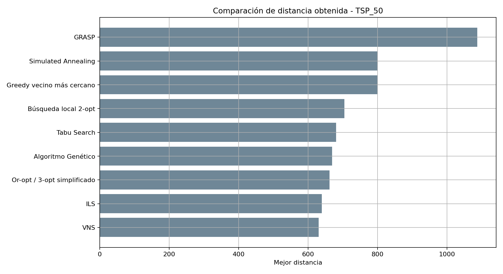
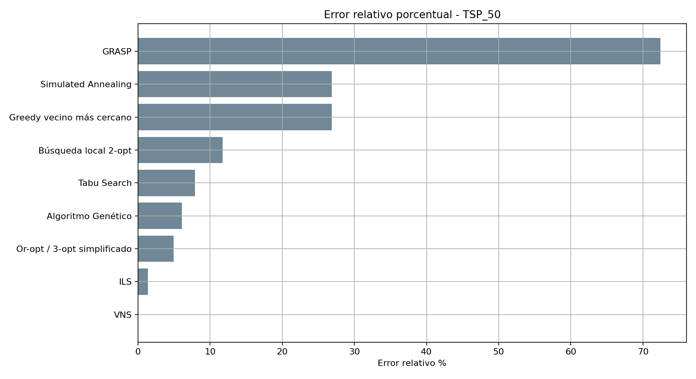
Estos gráficos permiten observar la calidad de las soluciones en TSP_50. Los algoritmos con menor error relativo se ubican más cerca de la referencia; en esta instancia, destacan VNS. Las barras de error muestran con claridad qué métodos quedan más alejados de la mejor distancia disponible para la comparación.
7.3.3 Tiempo de ejecución en TSP_50
El siguiente paso es revisar el costo computacional. Este gráfico muestra cuánto tarda cada algoritmo en promedio y ayuda a distinguir métodos rápidos de métodos más costosos.
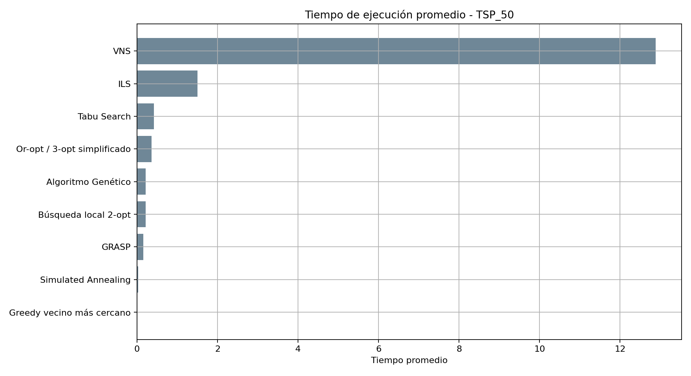
El gráfico de tiempo de TSP_50 muestra el costo computacional relativo de cada método. El algoritmo más rápido fue Greedy vecino más cercano, mientras que el mayor tiempo promedio correspondió a VNS. Esta diferencia es relevante porque una mejor distancia no siempre se obtiene con el menor costo computacional.
7.3.4 Ruta ganadora animada de TSP_50
Una vez identificada la mejor solución, el GIF permite observar el recorrido ciudad por ciudad. Esta visualización transforma la ruta ganadora en una secuencia interpretable y más útil para explicar el resultado.
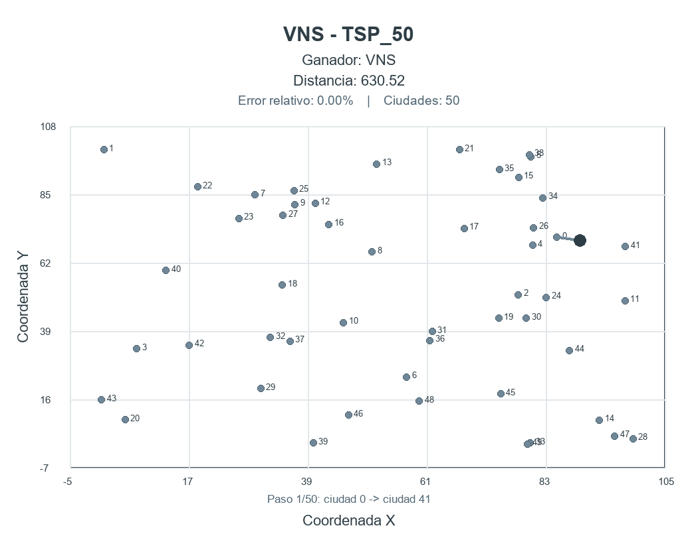
El GIF muestra paso a paso la ruta ganadora de TSP_50. En esta instancia, el algoritmo ganador fue VNS, con distancia 630.5203. Esta visualización ayuda a explicar la solución como recorrido secuencial de ciudad en ciudad, en lugar de verla solo como una línea estática.
7.4 Instancia TSP_100
7.4.1 Tabla comparativa de métricas para TSP_100
La tabla siguiente resume el desempeño de cada algoritmo en esta instancia. Se comparan la distancia obtenida, la referencia usada, el error relativo, el tiempo promedio y la validez de la ruta.
| Algoritmo | Tipo | Mejor distancia | Distancia de referencia | Tipo de referencia | Error relativo % | Tiempo promedio | Ruta válida | |
|---|---|---|---|---|---|---|---|---|
| 18 | VNS | Búsqueda por vecindarios variables | 802.6989 | 802.6989 | Mejor referencia experimental | 0.0000 | 41.4571 | True |
| 10 | Algoritmo Genético | Poblacional evolutivo | 840.3529 | 802.6989 | Mejor referencia experimental | 4.6909 | 0.5584 | True |
| 14 | ILS | Trayectoria | 841.3502 | 802.6989 | Mejor referencia experimental | 4.8152 | 4.8603 | True |
| 15 | Or-opt / 3-opt simplificado | Mejora local | 851.6950 | 802.6989 | Mejor referencia experimental | 6.1039 | 1.3949 | True |
| 17 | Tabu Search | Trayectoria con memoria | 858.6335 | 802.6989 | Mejor referencia experimental | 6.9683 | 1.1220 | True |
| 11 | Búsqueda local 2-opt | Mejora local | 895.8587 | 802.6989 | Mejor referencia experimental | 11.6058 | 0.3264 | True |
| 13 | Greedy vecino más cercano | Constructivo | 956.9990 | 802.6989 | Mejor referencia experimental | 19.2227 | 0.0012 | True |
| 16 | Simulated Annealing | Trayectoria probabilística | 956.9990 | 802.6989 | Mejor referencia experimental | 19.2227 | 0.0487 | True |
| 12 | GRASP | Constructivo + mejora | 2134.0050 | 802.6989 | Mejor referencia experimental | 165.8537 | 0.1393 | True |
En TSP_100, la mejor distancia registrada corresponde a VNS, con una distancia de 802.6989 y un error relativo de 0.0000%. La referencia utilizada para esta instancia es Mejor referencia experimental. En términos de rapidez, el menor tiempo promedio lo obtuvo Greedy vecino más cercano con 0.001172 segundos. El mayor error relativo se observa en GRASP, lo que permite distinguir entre una solución rápida y una solución de mejor calidad.
7.4.2 Distancia y error relativo en TSP_100
Después de revisar la tabla, los gráficos de distancia y error relativo permiten observar visualmente qué algoritmos se acercan más a la referencia de comparación y cuáles quedan más alejados.
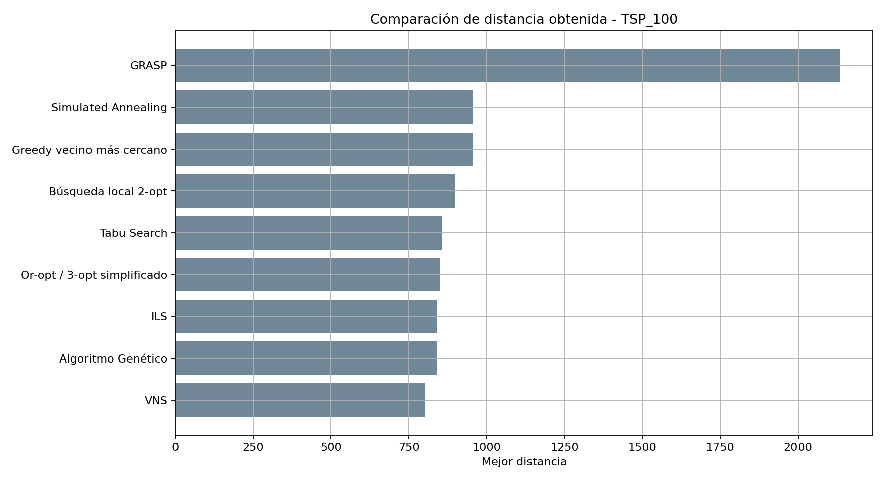
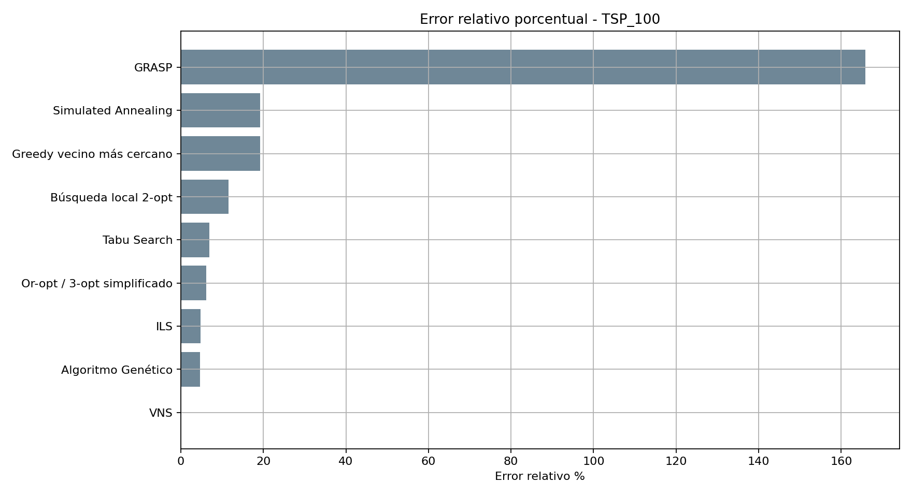
Estos gráficos permiten observar la calidad de las soluciones en TSP_100. Los algoritmos con menor error relativo se ubican más cerca de la referencia; en esta instancia, destacan VNS. Las barras de error muestran con claridad qué métodos quedan más alejados de la mejor distancia disponible para la comparación.
7.4.3 Tiempo de ejecución en TSP_100
El siguiente paso es revisar el costo computacional. Este gráfico muestra cuánto tarda cada algoritmo en promedio y ayuda a distinguir métodos rápidos de métodos más costosos.
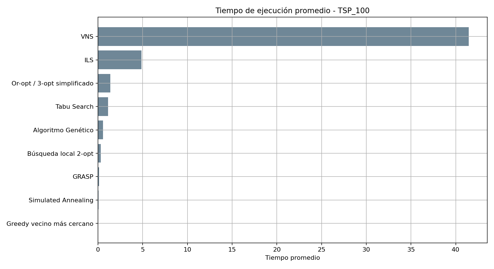
El gráfico de tiempo de TSP_100 muestra el costo computacional relativo de cada método. El algoritmo más rápido fue Greedy vecino más cercano, mientras que el mayor tiempo promedio correspondió a VNS. Esta diferencia es relevante porque una mejor distancia no siempre se obtiene con el menor costo computacional.
7.4.4 Ruta ganadora animada de TSP_100
Una vez identificada la mejor solución, el GIF permite observar el recorrido ciudad por ciudad. Esta visualización transforma la ruta ganadora en una secuencia interpretable y más útil para explicar el resultado.
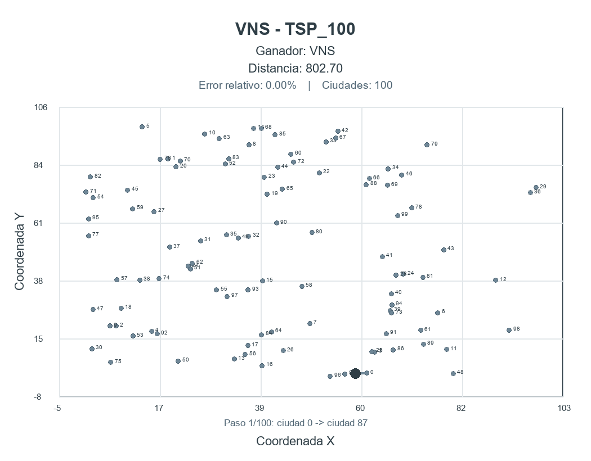
El GIF muestra paso a paso la ruta ganadora de TSP_100. En esta instancia, el algoritmo ganador fue VNS, con distancia 802.6989. Esta visualización ayuda a explicar la solución como recorrido secuencial de ciudad en ciudad, en lugar de verla solo como una línea estática.
7.5 Síntesis global: relación entre calidad y costo computacional
Luego de revisar cada instancia por separado, resulta útil observar todos los algoritmos en un mismo plano de comparación. Este gráfico interactivo resume la relación entre error relativo y tiempo promedio considerando las cuatro instancias. Los colores distinguen la instancia, y al pasar el cursor sobre cada punto se despliega la información detallada del algoritmo.
Pase el cursor sobre cada punto para ver algoritmo, instancia, distancia, error, tiempo y referencia.
Esta lectura global permite identificar visualmente qué métodos se ubican cerca de error cero y, al mismo tiempo, cuáles requieren menor tiempo. Por eso funciona como puente entre el análisis individual de cada instancia y la revisión posterior de convergencia y ranking general.
7.6 Comparación global y convergencia de metaheurísticas
Después del análisis por instancia, se revisa el comportamiento global de las metaheurísticas. Las curvas de convergencia permiten observar cómo mejora la mejor distancia durante la ejecución y en qué momento los algoritmos tienden a estabilizarse.
Convergencia en TSP_10
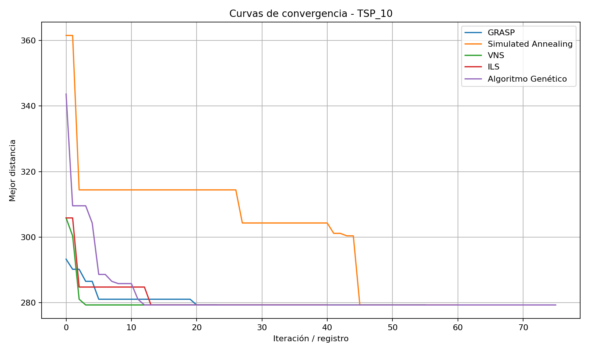
En la instancia TSP_10 se observa que la mayoría de las metaheurísticas logra estabilizarse rápidamente en valores cercanos a la mejor distancia encontrada. Esto es esperable, ya que el tamaño reducido de la instancia permite explorar el espacio de búsqueda con mayor facilidad. VNS e ILS muestran una convergencia temprana hacia soluciones de alta calidad, mientras que el Algoritmo Genético también reduce su distancia durante las primeras iteraciones hasta estabilizarse. Simulated Annealing presenta una trayectoria más gradual, con mejoras tardías antes de alcanzar una distancia competitiva. En esta instancia, las diferencias entre algoritmos tienden a reducirse debido a la baja dimensionalidad del problema.
Convergencia en TSP_20
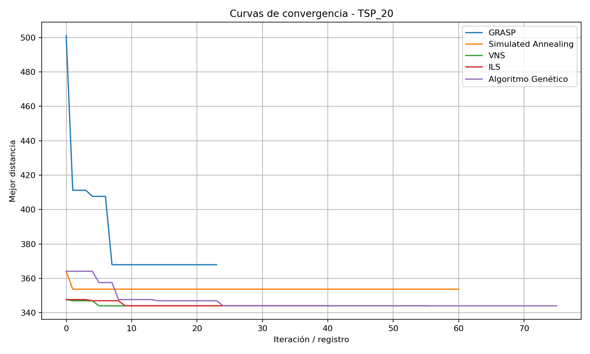
En TSP_20 comienza a evidenciarse con mayor claridad el efecto del aumento dimensional. Las curvas muestran que algunos algoritmos alcanzan rápidamente una zona de estabilización, mientras que otros requieren más iteraciones para mejorar la ruta inicial. VNS, ILS y el Algoritmo Genético presentan un comportamiento competitivo, con descensos tempranos y posterior estabilización. GRASP muestra una mejora inicial marcada, aunque su convergencia se estabiliza en una distancia mayor respecto de los métodos más competitivos. Esto sugiere que, a medida que el número de ciudades aumenta, la estrategia de búsqueda y la capacidad de escapar de óptimos locales se vuelven más relevantes.
Convergencia en TSP_50
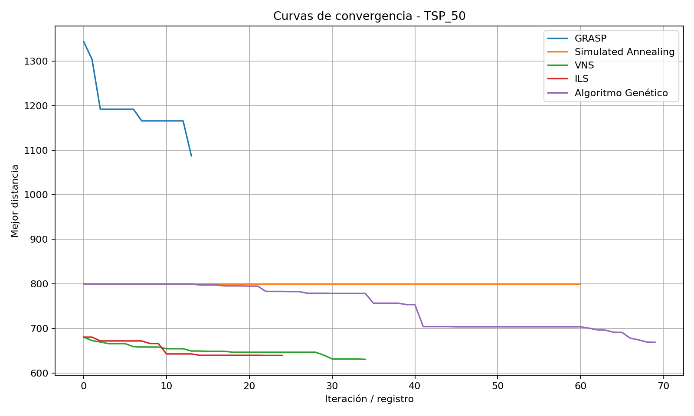
En la instancia TSP_50 se aprecia una diferencia más marcada entre las estrategias evaluadas. VNS e ILS mantienen un comportamiento eficiente, alcanzando rápidamente soluciones de menor distancia y estabilizándose en valores competitivos. El Algoritmo Genético muestra una mejora progresiva más lenta, lo que refleja su naturaleza poblacional: requiere más iteraciones para combinar y refinar soluciones. Simulated Annealing se mantiene prácticamente estable durante gran parte de la ejecución, lo que indica una menor capacidad de mejora bajo la configuración utilizada. GRASP presenta mejoras iniciales, pero permanece alejado de las mejores distancias observadas en esta instancia. En conjunto, el gráfico evidencia que el aumento del tamaño del problema amplifica las diferencias entre algoritmos.
Convergencia en TSP_100
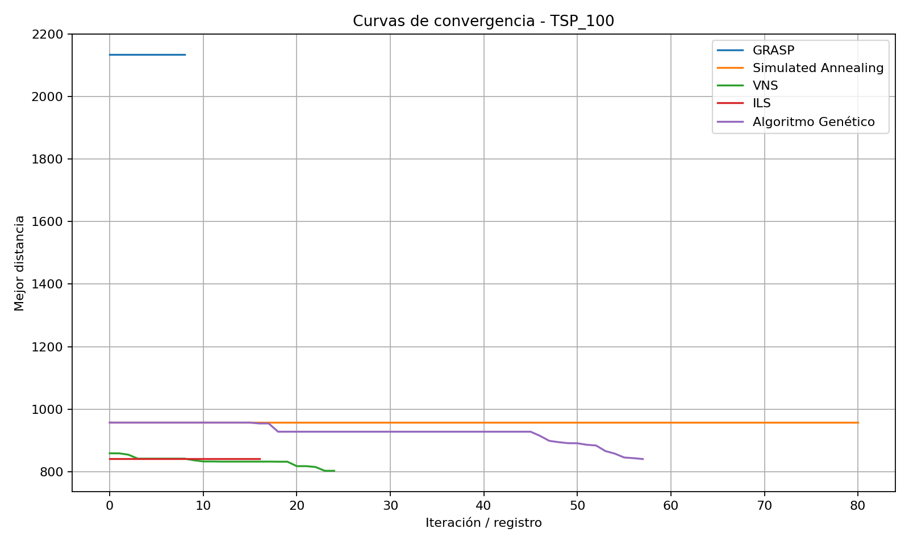
En TSP_100 el comportamiento de convergencia refleja de forma más clara la dificultad del problema. Las curvas muestran que no todos los algoritmos logran mejorar de manera significativa durante la ejecución. VNS e ILS mantienen una ventaja relativa al alcanzar distancias menores en comparación con otras metaheurísticas. El Algoritmo Genético presenta una mejora progresiva, aunque más lenta, lo que es coherente con su enfoque basado en población y evolución iterativa. Simulated Annealing y GRASP tienden a estabilizarse en valores superiores, lo que sugiere que, bajo los parámetros utilizados, tuvieron menor capacidad para refinar soluciones en una instancia de mayor tamaño. Este resultado refuerza la importancia de analizar no solo la distancia final, sino también la velocidad de convergencia y la estabilidad de cada método.
En términos generales, las curvas de convergencia permiten observar que el desempeño de las metaheurísticas no depende únicamente de la distancia final obtenida, sino también de la velocidad con que alcanzan soluciones competitivas y de su capacidad para continuar mejorando a medida que avanza la ejecución. En instancias pequeñas, varios métodos logran resultados similares; sin embargo, al aumentar el número de ciudades, las diferencias entre estrategias se vuelven más evidentes. Los métodos basados en búsqueda local iterada o cambio de vecindarios tienden a mostrar una convergencia más rápida y estable, mientras que los métodos poblacionales pueden requerir más iteraciones para expresar su capacidad de mejora. Por esta razón, la comparación entre metaheurísticas debe considerar simultáneamente calidad de solución, tiempo de ejecución y comportamiento de convergencia.
7.7 Ranking general de algoritmos
El ranking promedio resume el rendimiento general de los algoritmos, mientras que el boxplot permite observar la variabilidad de los métodos estocásticos. Esta lectura global complementa el análisis por instancia.
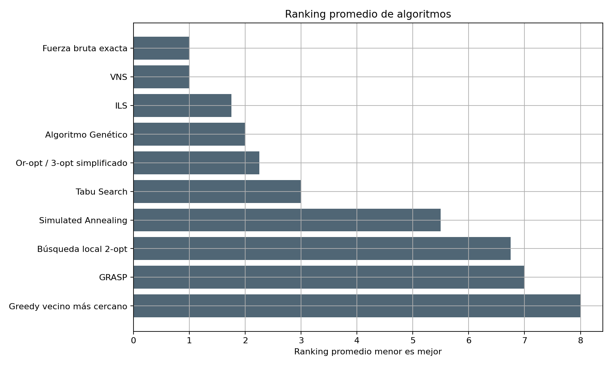
En el gráfico de ranking promedio se observa una comparación global del desempeño relativo de los algoritmos, donde valores menores indican mejores posiciones promedio. En este caso, la fuerza bruta exacta aparece con el mejor ranking, pero su interpretación debe realizarse con cautela, ya que fue utilizada únicamente en la instancia pequeña TSP_10 como referencia exacta y no como método escalable para todas las instancias. Entre las metaheurísticas, VNS e ILS destacan por ubicarse en las mejores posiciones promedio, lo que sugiere un comportamiento competitivo y estable frente al aumento del tamaño del problema. El Algoritmo Genético y Or-opt / 3-opt simplificado también presentan un rendimiento favorable, aunque ligeramente por debajo de las mejores estrategias de búsqueda local avanzada. En contraste, Greedy vecino más cercano y GRASP aparecen en posiciones menos favorables dentro del ranking, lo que indica que, si bien pueden generar soluciones válidas, su desempeño relativo fue menor frente a métodos con mayor capacidad de refinamiento o exploración del espacio de búsqueda.
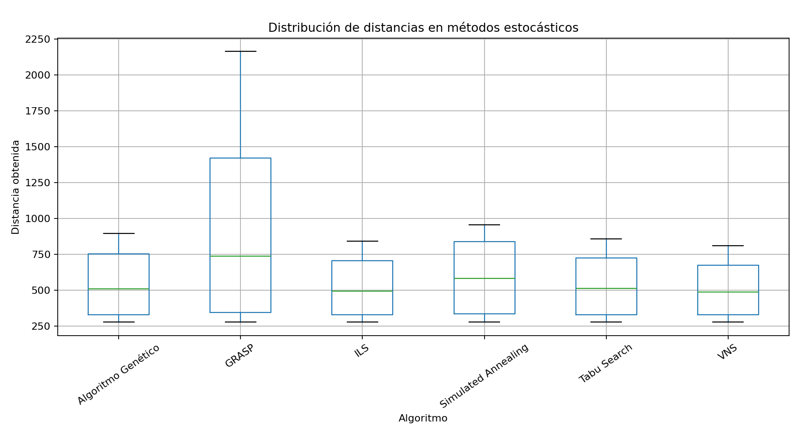
El boxplot de métodos estocásticos permite observar la variabilidad de las distancias obtenidas por algoritmos que incorporan componentes aleatorios o procesos iterativos dependientes de la configuración inicial. En términos generales, métodos como ILS, Tabu Search y VNS presentan distribuciones más compactas, lo que sugiere mayor estabilidad en las soluciones obtenidas. El Algoritmo Genético muestra una variabilidad moderada, coherente con su naturaleza poblacional, donde la calidad final depende de la evolución de la población, la selección, el cruce y la mutación. GRASP presenta una dispersión más amplia, lo que indica mayor sensibilidad a la etapa constructiva aleatorizada y a la calidad de las soluciones iniciales generadas. Simulated Annealing también muestra variabilidad, aunque con una tendencia a estabilizarse en rangos intermedios. Este análisis refuerza que no basta con observar la mejor distancia alcanzada, sino que también es importante evaluar la consistencia del algoritmo entre ejecuciones o instancias.
En conjunto, el ranking promedio y el boxplot complementan el análisis por instancia, ya que permiten observar tanto el desempeño relativo general como la estabilidad de los algoritmos evaluados. Los resultados sugieren que las estrategias basadas en búsqueda local avanzada y cambio de vecindarios, como VNS e ILS, lograron un mejor equilibrio entre calidad y consistencia. Por otro lado, los métodos más simples o altamente dependientes de la construcción inicial pueden ser rápidos, pero tienden a quedar en posiciones menos favorables cuando se evalúa la calidad global de las rutas. Esta comparación confirma la importancia de analizar simultáneamente distancia obtenida, variabilidad, tiempo de ejecución y comportamiento de convergencia.
8. Discusión
Los resultados obtenidos permiten observar que el rendimiento de los algoritmos aplicados al Problema del Viajero no puede evaluarse únicamente a partir de la distancia final de la ruta. Si bien la distancia total es la medida principal de calidad, el tiempo de ejecución, la estabilidad de los resultados y la capacidad de mejora durante la ejecución también son aspectos relevantes para comparar los métodos de manera justa.
En primer lugar, la fuerza bruta cumple un rol metodológico importante, ya que permite obtener una referencia exacta en la instancia TSP_10. Sin embargo, su utilidad queda limitada a instancias pequeñas, debido al crecimiento factorial del número de rutas posibles. Esta limitación justifica el uso de heurísticas, búsquedas locales y metaheurísticas en instancias de mayor tamaño. En TSP_20, TSP_50 y TSP_100, la comparación se realiza respecto de la mejor referencia experimental encontrada, lo cual permite evaluar el desempeño relativo de los algoritmos, pero no implica demostrar optimalidad global.
Greedy vecino más cercano funciona como una línea base útil por su rapidez y simplicidad. No obstante, al tomar decisiones locales sin reconsiderar elecciones anteriores, puede quedar lejos de rutas más competitivas cuando aumenta el número de ciudades. Esta característica permite entender por qué los métodos de mejora posterior, como 2-opt, Or-opt / 3-opt simplificado, ILS o VNS, tienden a obtener mejores resultados: no se limitan a construir una ruta inicial, sino que buscan corregirla mediante movimientos sobre la estructura de la solución.
Las metaheurísticas evaluadas presentan distintas estrategias para equilibrar exploración y explotación. ILS combina búsqueda local con perturbaciones, VNS modifica sistemáticamente el vecindario de búsqueda, Tabu Search utiliza memoria para evitar ciclos y Simulated Annealing acepta ocasionalmente soluciones peores para escapar de óptimos locales. Estas estrategias explican por qué, en general, los métodos más elaborados pueden obtener rutas de mejor calidad que una heurística constructiva simple, aunque normalmente requieran mayor tiempo de ejecución.
El Algoritmo Genético representa la componente evolutiva del proyecto. A diferencia de las búsquedas de trayectoria única, trabaja con una población de soluciones candidatas y aplica operadores de selección, cruce, mutación y reemplazo. Esta lógica permite mantener diversidad y combinar características de diferentes rutas. Sin embargo, su desempeño depende fuertemente de la configuración de parámetros, del tamaño de población, de los operadores genéticos utilizados y del número de generaciones. Por esta razón, puede presentar mejoras progresivas, pero no necesariamente dominar en todos los escenarios.
Las curvas de convergencia aportan una lectura adicional al análisis, ya que muestran cómo evoluciona la mejor distancia encontrada durante la ejecución. En instancias pequeñas, varios algoritmos tienden a estabilizarse rápidamente; en cambio, al aumentar el número de ciudades, las diferencias de comportamiento se vuelven más visibles. Algunos métodos alcanzan rápidamente soluciones competitivas, mientras que otros requieren más iteraciones o se estabilizan en valores menos favorables. Esto confirma que la velocidad de convergencia también debe considerarse dentro de la comparación.
Finalmente, el ranking general y el boxplot complementan el análisis por instancia. El ranking permite observar el desempeño relativo promedio de los algoritmos, mientras que el boxplot muestra la variabilidad de los métodos estocásticos. En conjunto, estos resultados refuerzan la idea de que no existe un único algoritmo universalmente superior para todas las condiciones. La elección del método depende del tamaño de la instancia, del tiempo disponible, de la calidad requerida y de la estabilidad esperada en las soluciones.
9. Conclusiones y recomendaciones
9.1 Conclusiones
El desarrollo del proyecto permitió analizar el Problema del Viajero desde una perspectiva computacional y experimental, comparando métodos exactos, heurísticos y metaheurísticos sobre instancias de diferente tamaño. Los resultados evidencian que el TSP presenta un crecimiento combinatorio significativo, lo que limita el uso de métodos exactos como fuerza bruta a instancias pequeñas. En este estudio, fuerza bruta fue útil para obtener una referencia exacta en TSP_10, pero no resulta viable para instancias de mayor dimensionalidad.
La comparación entre algoritmos muestra que las heurísticas simples, como Greedy vecino más cercano, permiten generar soluciones válidas en tiempos muy bajos, pero su desempeño puede verse limitado por decisiones locales. En cambio, los métodos de mejora local y metaheurísticas incorporan mecanismos que permiten refinar rutas iniciales, explorar vecindarios alternativos y escapar de óptimos locales, obteniendo soluciones más competitivas frente a la referencia experimental.
Asimismo, el proyecto permitió observar que el desempeño de un algoritmo no debe evaluarse únicamente por la distancia final obtenida. El tiempo de ejecución, el error relativo, la estabilidad de los resultados y el comportamiento de convergencia son factores igualmente importantes para comprender el rendimiento real de cada método. En este sentido, la comparación global permitió identificar compromisos entre calidad de solución y costo computacional.
El Algoritmo Genético permitió incorporar explícitamente el enfoque de computación evolutiva dentro del proyecto. Su uso mostró la importancia de representar adecuadamente las soluciones como permutaciones válidas y de utilizar operadores que preserven la factibilidad de las rutas. Aunque su comportamiento puede depender de la configuración de parámetros, representa una estrategia relevante al trabajar con poblaciones, diversidad y evolución iterativa de soluciones.
En síntesis, los resultados respaldan la utilidad de las metaheurísticas para abordar problemas de optimización combinatoria donde la búsqueda exacta deja de ser práctica. Para el caso del TSP, los métodos basados en búsqueda local avanzada, perturbaciones, memoria, cambio de vecindarios o población permiten obtener soluciones de buena calidad en tiempos computacionalmente razonables, especialmente en instancias donde no es posible garantizar el óptimo global.
9.2 Recomendaciones y trabajo futuro
Como trabajo futuro, se recomienda realizar múltiples ejecuciones independientes para los algoritmos estocásticos, utilizando distintas semillas aleatorias, con el fin de evaluar con mayor robustez la estabilidad de los resultados. También sería conveniente ajustar sistemáticamente los hiperparámetros de cada metaheurística, especialmente en métodos como Algoritmo Genético, Simulated Annealing, Tabu Search, GRASP y VNS.
Otra línea de mejora consiste en comparar las soluciones obtenidas con instancias benchmark del TSP que cuenten con valores óptimos o mejores conocidos. Esto permitiría calcular errores relativos frente a referencias externas más robustas, especialmente en instancias de mayor tamaño.
Finalmente, se recomienda ampliar el análisis incorporando métricas adicionales, como número de evaluaciones de función objetivo, sensibilidad a parámetros y comparación estadística entre algoritmos. Estas extensiones permitirían fortalecer la evaluación experimental y entregar conclusiones más generales sobre el comportamiento de las metaheurísticas aplicadas al TSP.
10. Anexos
Parámetros de algoritmos
| Instancia | Algoritmo | Repetición | Parámetros | |
|---|---|---|---|---|
| 0 | TSP_10 | Fuerza bruta exacta | 1 | {'inicio_fijo': 0} |
| 1 | TSP_10 | Greedy vecino más cercano | 1 | {'inicio': 0} |
| 2 | TSP_10 | Búsqueda local 2-opt | 1 | {'inicio': 'greedy', 'max_pasadas': 28} |
| 3 | TSP_10 | Or-opt / 3-opt simplificado | 1 | {'bloques': '1,2,3', 'max_pasadas': 14} |
| 4 | TSP_10 | ILS | 1 | {'iteraciones': 40, 'semilla': 3036} |
| ... | ... | ... | ... | ... |
| 80 | TSP_100 | VNS | 2 | {'iteraciones': 24, 'vecindarios': 'swap, inve... |
| 81 | TSP_100 | VNS | 3 | {'iteraciones': 24, 'vecindarios': 'swap, inve... |
| 82 | TSP_100 | Algoritmo Genético | 1 | {'generaciones': 45, 'poblacion': 42, 'mutacio... |
| 83 | TSP_100 | Algoritmo Genético | 2 | {'generaciones': 45, 'poblacion': 42, 'mutacio... |
| 84 | TSP_100 | Algoritmo Genético | 3 | {'generaciones': 45, 'poblacion': 42, 'mutacio... |
85 rows × 4 columns
Rutas completas encontradas
Validaciones completas
| Instancia | Algoritmo | Repetición | empieza_y_termina_misma_ciudad | visita_todas_las_ciudades | sin_repetir_ciudades_intermedias | largo_n_mas_1 | ciudades_en_rango | ruta_valida | |
|---|---|---|---|---|---|---|---|---|---|
| 0 | TSP_10 | Fuerza bruta exacta | 1 | True | True | True | True | True | True |
| 1 | TSP_10 | Greedy vecino más cercano | 1 | True | True | True | True | True | True |
| 2 | TSP_10 | Búsqueda local 2-opt | 1 | True | True | True | True | True | True |
| 3 | TSP_10 | Or-opt / 3-opt simplificado | 1 | True | True | True | True | True | True |
| 4 | TSP_10 | ILS | 1 | True | True | True | True | True | True |
| ... | ... | ... | ... | ... | ... | ... | ... | ... | ... |
| 80 | TSP_100 | VNS | 2 | True | True | True | True | True | True |
| 81 | TSP_100 | VNS | 3 | True | True | True | True | True | True |
| 82 | TSP_100 | Algoritmo Genético | 1 | True | True | True | True | True | True |
| 83 | TSP_100 | Algoritmo Genético | 2 | True | True | True | True | True | True |
| 84 | TSP_100 | Algoritmo Genético | 3 | True | True | True | True | True | True |
85 rows × 9 columns
Archivos visuales de rutas
Los GIFs de rutas ganadoras se muestran en la sección 7 para evitar repetir la misma visualización en anexos. Los PNG estáticos de mejores rutas permanecen guardados en graficos/ como respaldo, pero no se insertan en el informe porque duplican la información principal de las animaciones.
Archivos usados e instrucciones de reproducción
El informe usa datos desde resultados/resultados_tsp.csv, resultados/resultados_tsp_detalle.csv, tablas/mejores_por_instancia.csv, tablas/parametros_algoritmos.csv, tablas/validaciones_rutas.csv y la carpeta graficos/.
Para renderizar:
quarto render informe_tsp_quarto.qmdPara instalar dependencias:
pip install -r requirements.txt11. Referencias
Clase 3: Computación Evolutiva. (s. f.). Material de clase de Computación Evolutiva.
Eiben, A. E., & Smith, J. E. (2015). Introduction to evolutionary computing (2nd ed.). Springer.
Metaheurísticas I. (s. f.). Material de clase de Computación Evolutiva.
Metaheurísticas II. (s. f.). Material de clase de Computación Evolutiva.
Pop, P. C., Cosma, O., Sabo, C., & Pop Sitar, C. (2024). A comprehensive survey on the generalized traveling salesman problem. European Journal of Operational Research, 314(3), 819-835.
Wang, Y., & Han, Z. (2021). Ant colony optimization for traveling salesman problem based on parameters optimization. Applied Soft Computing, 107, 107439.